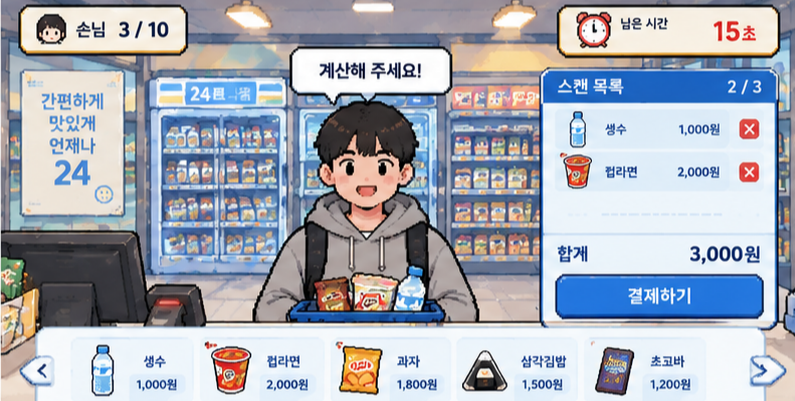
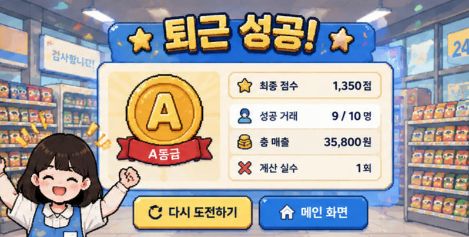

오늘도 편의점 오픈!
편의점 아르바이트생이 되어 상품을 스캔하고 돌발 요청에 대응하는 2D 캐주얼 타임 매니지먼트 게임입니다. 일상적인 아르바이트에 빠른 판단과 정확한 계산의 재미를 더했습니다.
근무 매뉴얼
돌발 이벤트
“이것도 같이 계산해 주세요!”
“이건 빼주세요!”
“쿠폰 적용해 주세요!”
점수 규칙
정상 결제 +100점 · 10초 이내 +50점 · 돌발 요청 성공 +50점
오류 또는 시간 초과: 0점. 성공한 거래 금액만 매출에 반영됩니다.
상품 8종
기획 화면 미리보기


중간 과제 기획서의 콘셉트 이미지이며 실제 구현 화면과 차이가 있습니다.
AI와 함께 만든 게임
기획서를 바탕으로 웹 게임의 구조, UI, 계산 로직, 돌발 이벤트, 점수 시스템을 구현했습니다.
AI 프롬프트 보기